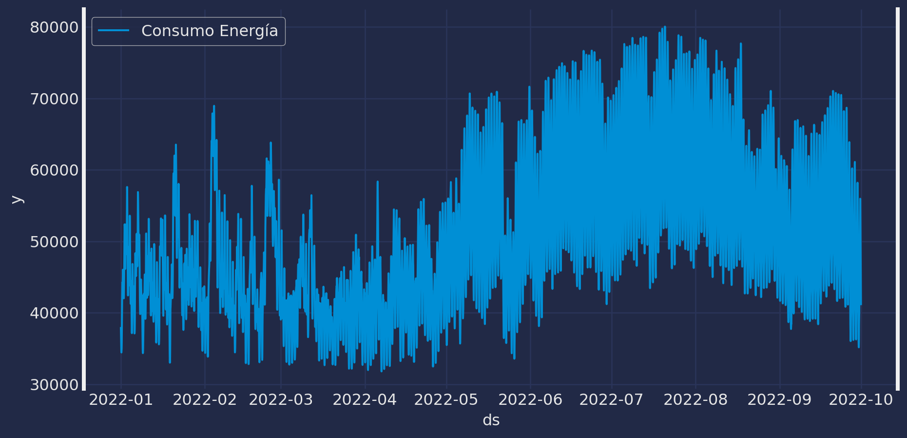
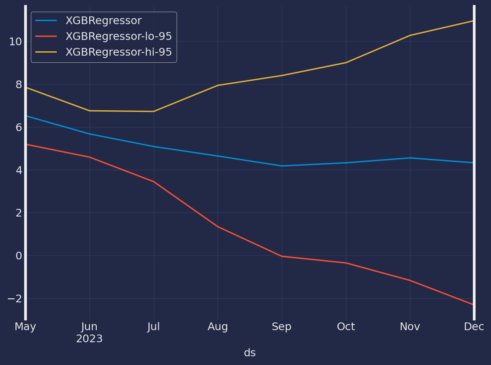

# Manipulación y Tratamiento de Datos
import numpy as np
import pandas as pd
# Gráficos o Plots
import matplotlib.pyplot as plt
import matplotlib.ticker as ticker
import plotly.express as px
import plotly.graph_objects as go
import seaborn as sns
plt.style.use("fivethirtyeight")
plt.rcParams["lines.linewidth"] = 1.5
dark_style = {
"figure.facecolor": "#212946",
"axes.facecolor": "212946",
"savefig.facecolor":"212946",
"axes.grid":True,
"axes.grid.which": "both",
"axes.spines.top": False,
"axes.spines.bottom": False,
"grid.color": "#2A3459",
"grid.linewidth": "1",
"text.color":"0.9",
"axes.labelcolor": "0.9",
"xtick.color": "0.9",
"ytick.color": "0.9",
"font.size": 12}
plt.rcParams.update(dark_style)
# Tamaño del gráfico
from pylab import rcParams
rcParams["figure.figsize"] = (10,5)
# Ocultar Warnings
import warnings
warnings.filterwarnings("ignore")Time Series Forecasting with XGBoost
Utilizando Machine Learning Forecast [MLForecast]
XGBoost
MLForecast
Python
sklearn
MLForecast
MLForecast es un marco de datos para realizar pronósticos de series de tiempo utilizando modelos de aprendizaje automático, con la opción de escalar a cantidades masivas de datos utilizando clústeres remotos.
¿Por qué utilizar MLForecast?
Las alternativas actuales de Python para los modelos de aprendizaje automático son lentas, imprecisas y no escalan bien. Así que se crearón una biblioteca que se puede usar para hacer pronósticos en entornos de producción. MLForecast incluye ingeniería de características eficientes para entrenar cualquier modelo de aprendizaje automático (con fit y predict métodos como sklearn) para adaptarse a millones de series temporales.
Características
Las implementaciones más rapidas de ingeniería de funciones para la previsión de series temporales en Python.
Compatibilidad lista para usar con Spark, Dask y Ray
Pronósticos probabilísticos con predicción conforme.
Soporte para variables exógenas y covariables estáticas.
Sintaxis familiar
sklearn:.fity.predict
Validación Cruzada
La validación cruzada de series temporales es un método para evaluar cómo se habría comportado un modelo en el pasado. Funciona definiendo una ventana deslizante a través de los datos históricos y prediciendo el período que le sigue.
MLForecast tiene una implementación de validación cruzada de series de tiempo que es rápida y fácil de usar. Esta implementación hace que la validación cruzada sea una operación eficiente, lo que hace que consuma menos tiempo.
¿Cómo realizar validación cruzada de series de tiempo?
Una vez que se ha instanciado el objeto MLForecast, podemos usar el método cross_validation, que toma los siguientes argumentos:
data:marco de datos de entrenamiento con formato MLForecast.window_size(int):representa los h pasos hacia el futuro que se pronosticaránn_windows(int):cantidad de ventanas utilizadas para la validación cruzada, es decir, la cantidad de procesos de pronóstico en el pasado que desea evaluar.id_col:identifica cada serie temporaltime_col:identifica la columna de la serie temporaltarget_col:identifica la columna a modelar
El objeto crossvaldation_df es un nuevo marco de datos que incluye las siguientes columnas:
unique_id:identifica cada serie temporalds:marca de fecha o índice temporalcutoff:la última marca de fecha o índice temporal del n_windowsmodel:columnas con el nombre del modelo y el valor ajustado.
Evaluar Resultados
Una vez hecho todo lo anterior, podremos calcular la precisión del pronóstico utilizando una métrica de precisión adecuada. En mi caso particular uso el error cuadrático medio (RMSE). Para hacer esto, primero debemos instalar datasetsforecast, una biblioteca de Python desarrollada por Nixtla que incluye una función para calcular el RMSE.
La función para calcular el RMSE toma dos argumentos:
- Los valores reales
- Las predicciones
Esta medida debería reflejar mejor las capacidades predictivas de nuestro modelo, ya que utilizo diferentes periodos de tiempo para probar su precisión.
Modelo XGBoost
El modelo XGBoost es un algoritmo de aprendizaje automático supervisado basado en árboles de decisión. Se utiliza para problemas de regresión y clasificación, se ha convertido en uno de los modelos más importantes y efectivos en las competencias de aprendizaje automático.
Toerema del Modelo XGBoost
Dados los datos de entrenamiento \(D = (x_1, y_1), (x_2, y_2), . . . , (x_n, y_n)\) donde cada \(x_i\) es un vector de características de entrada y cada \(y_i\) es la etiqueta de salida correspondiente, el objetivo es encontrar una función \(f(x)\) que mapee los vectores de características a las etiquetas de salida y minimice el error de predicción en el conjunto de entrenamiento.
La construcción del modelo implica la creación de un conjunto de árboles de decisión, donde cada árbol se construye de manera secuencial para minimizar la función de costo global, que es la suma de las funciones de costo individuales de cada árbol.
El algoritmo XGBoost también utiliza técnicas de regularización para evitar el sobreajuste, lo que ayuda a mejorar el rendimiento en conjuntos de datos no visto. Estás técnicas incluyen la poda de árboles, la penalización \(L_1\) y \(L_2\), y el muestreo aleatorio de observaciones y variables.
Una característica del modelo XGBoost es que puede trabajar con tados a lo bruto (es decir, bases que contengan datos faltantes), es tan robusto que puede trabajar con este tipo de datos.
Modelo XGBoost Matemáticamente
El modelo XGBoost se construye a través de una combinación de árboles de decisión y técnicas de optimización de gradiente. En términos matemáticos el modelo XGBoost se puede escribir como:
\[ f(x) = \sum T(x;\theta_j) \]
donde \(f(x)\) es la función de predicción para el conjunto de características de entrada \(x\), \(T(x;\theta_j)\) es un árbol de decisión con parámetros \(\theta_j\), y la suma se realiza sobre un conjunto de árboles de decisión.
Cada árbol de decisión se construye de manera secuencial para minimizar la función de costo global, que es la suma de las funciones de costo individuales de cada árbol, es decir:
\[L = \sum l(y_i,f_i(x_i)) + \sum \Omega(\theta_j)\]
donde \(l(y_i, f_i(x_i))\) es la función de costo para el i-ésimo ejemplo de entrenamiento, \(f_i(x_i)\) es la predicción del modelo para el i-ésimo ejemplo de entrenamiento,y \(\Omega(\theta_j)\) es la penalización para el j-ésimo árbol de decisión, diseñada para evitar el sobreajuste.
La función de costo se puede escribir de varias maneras, dependiendo del problema específico. Por ejemplo, en un problema de regresión, la función de costo podría ser el error cuadrático medio (MSE), mientras que en un problema de clasificación, la función de costo podría ser la antropía cruzada.
Para construir el modelo XGBoost, se utilizan técnicas de optimización de gradiente para minimizar la función de costo global. Estas técnicas implican calcular las derivadas de la función de costo con respecto a los parámetros del modelo, y ajustar los parámetros en consecuencia.
Además, XGBoost utiliza técnicas de regularización para evitar el sobreajuste, como la poda de árboles, la penalización \(L_1\) y \(L_2\), y el muestreo aleatorio de observaciones y variables.
En resumen, el modelo XGBoost se construye a través de una combinación de árboles de decisión y técnicas de optimización de gradiente, con el objetivo de minimizar la función de costo global mientras se aplica la regularización para evitar el sobreajuste.
XGBoost para series de tiempo
XGBoost también puede ser aplicado a problemas de series de tiempo. Sin embargo, es importante tener en cuenta que la aplicación del modelo a datos de series de tiempo requiere un enfoque ligeramente diferente en comparación con los problemas de clasificación y regresión estándar.
Para aplicar XGBoost a datos de series de tiempo, es necesario crear características adecuadas para el modelo, lo que puede incluir características basadas en ventanas moviles, diferencias y tasas de cambio. También es importante considerar la estacionalidad y las tendencias en los datos de series de tiempo y aplicar técnicas de preprocesamiento de datos y validación cruzada adecuadas para este tipo de problemas.
Además, se deben tener en cuenta algunas consideraciones especiales en la configuración de características relevantes para la serie de tiempo y la selección de la función de costo y métricas de evaluación adecuadas.
Caso de estudio
Cargar datos
La entrada a MLForecast siempre es un marco de datos en formato de columnas: unique_id, ds y y.
unique_id(cadena, int o categorías) representa un identificador para la serie.ds(marca de fecha o int) debe ser una hora de indexación entera o una marca de fecha idealmente como AAAA-MM-DD para una fecha o AAAA-MM-DD HH: MM:SS para una marca de tiempo.y(numérico) representa la medida que deseamos pronósticar
Y_df = pd.read_csv('https://datasets-nixtla.s3.amazonaws.com/ERCOT-clean.csv', parse_dates=['ds'])
Y_df = Y_df.query("ds >= '2022-01-01' & ds <= '2022-10-01'")
sns.lineplot(data = Y_df, x = "ds", y = "y",
label = "Consumo Energía")
plt.show()
Note que esta serie presenta patrones estacionales.
Ajuste y Pronóstico del modelo XGBRegressor
# Biblioteca de Modelos a utilizar
import xgboost as xgb
import lightgbm as lgb
from mlforecast import MLForecast
from mlforecast.target_transforms import Differencesmodels = [
lgb.LGBMRegressor(),
xgb.XGBRegressor()
]mlf = MLForecast(
models=models,
freq='H',
target_transforms=[Differences([24])],
lags=range(1, 25)
)crossvalidation_df = mlf.cross_validation(
data=Y_df,
window_size=24,
n_windows=30,
)[LightGBM] [Warning] Auto-choosing col-wise multi-threading, the overhead of testing was 0.000689 seconds.
You can set `force_col_wise=true` to remove the overhead.
[LightGBM] [Info] Total Bins 6120
[LightGBM] [Info] Number of data points in the train set: 5784, number of used features: 24
[LightGBM] [Info] Start training from score 20.459896
[LightGBM] [Warning] Auto-choosing col-wise multi-threading, the overhead of testing was 0.000586 seconds.
You can set `force_col_wise=true` to remove the overhead.
[LightGBM] [Info] Total Bins 6120
[LightGBM] [Info] Number of data points in the train set: 5808, number of used features: 24
[LightGBM] [Info] Start training from score 16.278110
[LightGBM] [Warning] Auto-choosing row-wise multi-threading, the overhead of testing was 0.000911 seconds.
You can set `force_row_wise=true` to remove the overhead.
And if memory is not enough, you can set `force_col_wise=true`.
[LightGBM] [Info] Total Bins 6120
[LightGBM] [Info] Number of data points in the train set: 5832, number of used features: 24
[LightGBM] [Info] Start training from score 14.804025
[LightGBM] [Warning] Auto-choosing col-wise multi-threading, the overhead of testing was 0.000575 seconds.
You can set `force_col_wise=true` to remove the overhead.
[LightGBM] [Info] Total Bins 6120
[LightGBM] [Info] Number of data points in the train set: 5856, number of used features: 24
[LightGBM] [Info] Start training from score 8.046411
[LightGBM] [Warning] Auto-choosing col-wise multi-threading, the overhead of testing was 0.000572 seconds.
You can set `force_col_wise=true` to remove the overhead.
[LightGBM] [Info] Total Bins 6120
[LightGBM] [Info] Number of data points in the train set: 5880, number of used features: 24
[LightGBM] [Info] Start training from score -4.761817
[LightGBM] [Warning] Auto-choosing col-wise multi-threading, the overhead of testing was 0.000566 seconds.
You can set `force_col_wise=true` to remove the overhead.
[LightGBM] [Info] Total Bins 6120
[LightGBM] [Info] Number of data points in the train set: 5904, number of used features: 24
[LightGBM] [Info] Start training from score 4.125424
[LightGBM] [Warning] Auto-choosing col-wise multi-threading, the overhead of testing was 0.000579 seconds.
You can set `force_col_wise=true` to remove the overhead.
[LightGBM] [Info] Total Bins 6120
[LightGBM] [Info] Number of data points in the train set: 5928, number of used features: 24
[LightGBM] [Info] Start training from score 20.682681
[LightGBM] [Warning] Auto-choosing col-wise multi-threading, the overhead of testing was 0.000622 seconds.
You can set `force_col_wise=true` to remove the overhead.
[LightGBM] [Info] Total Bins 6120
[LightGBM] [Info] Number of data points in the train set: 5952, number of used features: 24
[LightGBM] [Info] Start training from score 22.922998
[LightGBM] [Warning] Auto-choosing col-wise multi-threading, the overhead of testing was 0.000592 seconds.
You can set `force_col_wise=true` to remove the overhead.
[LightGBM] [Info] Total Bins 6120
[LightGBM] [Info] Number of data points in the train set: 5976, number of used features: 24
[LightGBM] [Info] Start training from score 19.915449
[LightGBM] [Warning] Auto-choosing col-wise multi-threading, the overhead of testing was 0.000584 seconds.
You can set `force_col_wise=true` to remove the overhead.
[LightGBM] [Info] Total Bins 6120
[LightGBM] [Info] Number of data points in the train set: 6000, number of used features: 24
[LightGBM] [Info] Start training from score 17.515171
[LightGBM] [Warning] Auto-choosing col-wise multi-threading, the overhead of testing was 0.000528 seconds.
You can set `force_col_wise=true` to remove the overhead.
[LightGBM] [Info] Total Bins 6120
[LightGBM] [Info] Number of data points in the train set: 6024, number of used features: 24
[LightGBM] [Info] Start training from score 12.423390
[LightGBM] [Warning] Auto-choosing col-wise multi-threading, the overhead of testing was 0.000592 seconds.
You can set `force_col_wise=true` to remove the overhead.
[LightGBM] [Info] Total Bins 6120
[LightGBM] [Info] Number of data points in the train set: 6048, number of used features: 24
[LightGBM] [Info] Start training from score 6.484496
[LightGBM] [Warning] Auto-choosing col-wise multi-threading, the overhead of testing was 0.000588 seconds.
You can set `force_col_wise=true` to remove the overhead.
[LightGBM] [Info] Total Bins 6120
[LightGBM] [Info] Number of data points in the train set: 6072, number of used features: 24
[LightGBM] [Info] Start training from score 11.567787
[LightGBM] [Warning] Auto-choosing col-wise multi-threading, the overhead of testing was 0.000590 seconds.
You can set `force_col_wise=true` to remove the overhead.
[LightGBM] [Info] Total Bins 6120
[LightGBM] [Info] Number of data points in the train set: 6096, number of used features: 24
[LightGBM] [Info] Start training from score 14.818267
[LightGBM] [Warning] Auto-choosing col-wise multi-threading, the overhead of testing was 0.000618 seconds.
You can set `force_col_wise=true` to remove the overhead.
[LightGBM] [Info] Total Bins 6120
[LightGBM] [Info] Number of data points in the train set: 6120, number of used features: 24
[LightGBM] [Info] Start training from score 12.293849
[LightGBM] [Warning] Auto-choosing col-wise multi-threading, the overhead of testing was 0.000604 seconds.
You can set `force_col_wise=true` to remove the overhead.
[LightGBM] [Info] Total Bins 6120
[LightGBM] [Info] Number of data points in the train set: 6144, number of used features: 24
[LightGBM] [Info] Start training from score 11.707901
[LightGBM] [Warning] Auto-choosing col-wise multi-threading, the overhead of testing was 0.000639 seconds.
You can set `force_col_wise=true` to remove the overhead.
[LightGBM] [Info] Total Bins 6120
[LightGBM] [Info] Number of data points in the train set: 6168, number of used features: 24
[LightGBM] [Info] Start training from score 22.758710
[LightGBM] [Warning] Auto-choosing col-wise multi-threading, the overhead of testing was 0.000591 seconds.
You can set `force_col_wise=true` to remove the overhead.
[LightGBM] [Info] Total Bins 6120
[LightGBM] [Info] Number of data points in the train set: 6192, number of used features: 24
[LightGBM] [Info] Start training from score 25.677967
[LightGBM] [Warning] Auto-choosing col-wise multi-threading, the overhead of testing was 0.000567 seconds.
You can set `force_col_wise=true` to remove the overhead.
[LightGBM] [Info] Total Bins 6120
[LightGBM] [Info] Number of data points in the train set: 6216, number of used features: 24
[LightGBM] [Info] Start training from score 26.444992
[LightGBM] [Warning] Auto-choosing col-wise multi-threading, the overhead of testing was 0.000626 seconds.
You can set `force_col_wise=true` to remove the overhead.
[LightGBM] [Info] Total Bins 6120
[LightGBM] [Info] Number of data points in the train set: 6240, number of used features: 24
[LightGBM] [Info] Start training from score 34.442383
[LightGBM] [Warning] Auto-choosing col-wise multi-threading, the overhead of testing was 0.000597 seconds.
You can set `force_col_wise=true` to remove the overhead.
[LightGBM] [Info] Total Bins 6120
[LightGBM] [Info] Number of data points in the train set: 6264, number of used features: 24
[LightGBM] [Info] Start training from score 36.212792
[LightGBM] [Warning] Auto-choosing col-wise multi-threading, the overhead of testing was 0.000607 seconds.
You can set `force_col_wise=true` to remove the overhead.
[LightGBM] [Info] Total Bins 6120
[LightGBM] [Info] Number of data points in the train set: 6288, number of used features: 24
[LightGBM] [Info] Start training from score 32.396612
[LightGBM] [Warning] Auto-choosing col-wise multi-threading, the overhead of testing was 0.000611 seconds.
You can set `force_col_wise=true` to remove the overhead.
[LightGBM] [Info] Total Bins 6120
[LightGBM] [Info] Number of data points in the train set: 6312, number of used features: 24
[LightGBM] [Info] Start training from score 28.624504
[LightGBM] [Warning] Auto-choosing col-wise multi-threading, the overhead of testing was 0.000558 seconds.
You can set `force_col_wise=true` to remove the overhead.
[LightGBM] [Info] Total Bins 6120
[LightGBM] [Info] Number of data points in the train set: 6336, number of used features: 24
[LightGBM] [Info] Start training from score 28.720802
[LightGBM] [Warning] Auto-choosing col-wise multi-threading, the overhead of testing was 0.000605 seconds.
You can set `force_col_wise=true` to remove the overhead.
[LightGBM] [Info] Total Bins 6120
[LightGBM] [Info] Number of data points in the train set: 6360, number of used features: 24
[LightGBM] [Info] Start training from score 22.527080
[LightGBM] [Warning] Auto-choosing col-wise multi-threading, the overhead of testing was 0.000614 seconds.
You can set `force_col_wise=true` to remove the overhead.
[LightGBM] [Info] Total Bins 6120
[LightGBM] [Info] Number of data points in the train set: 6384, number of used features: 24
[LightGBM] [Info] Start training from score 19.823470
[LightGBM] [Warning] Auto-choosing col-wise multi-threading, the overhead of testing was 0.000577 seconds.
You can set `force_col_wise=true` to remove the overhead.
[LightGBM] [Info] Total Bins 6120
[LightGBM] [Info] Number of data points in the train set: 6408, number of used features: 24
[LightGBM] [Info] Start training from score 11.739053
[LightGBM] [Warning] Auto-choosing col-wise multi-threading, the overhead of testing was 0.000587 seconds.
You can set `force_col_wise=true` to remove the overhead.
[LightGBM] [Info] Total Bins 6120
[LightGBM] [Info] Number of data points in the train set: 6432, number of used features: 24
[LightGBM] [Info] Start training from score -3.854454
[LightGBM] [Warning] Auto-choosing col-wise multi-threading, the overhead of testing was 0.000588 seconds.
You can set `force_col_wise=true` to remove the overhead.
[LightGBM] [Info] Total Bins 6120
[LightGBM] [Info] Number of data points in the train set: 6456, number of used features: 24
[LightGBM] [Info] Start training from score -3.066119
[LightGBM] [Warning] Auto-choosing col-wise multi-threading, the overhead of testing was 0.000614 seconds.
You can set `force_col_wise=true` to remove the overhead.
[LightGBM] [Info] Total Bins 6120
[LightGBM] [Info] Number of data points in the train set: 6480, number of used features: 24
[LightGBM] [Info] Start training from score -7.603843crossvalidation_df.head()| unique_id | ds | cutoff | y | LGBMRegressor | XGBRegressor | |
|---|---|---|---|---|---|---|
| 0 | ERCOT | 2022-09-01 00:00:00 | 2022-08-31 23:00:00 | 45482.471757 | 45685.265537 | 45802.578125 |
| 1 | ERCOT | 2022-09-01 01:00:00 | 2022-08-31 23:00:00 | 43602.658043 | 43779.819515 | 43921.304688 |
| 2 | ERCOT | 2022-09-01 02:00:00 | 2022-08-31 23:00:00 | 42284.817342 | 42672.470923 | 42752.031250 |
| 3 | ERCOT | 2022-09-01 03:00:00 | 2022-08-31 23:00:00 | 41663.156771 | 42091.768192 | 42021.394531 |
| 4 | ERCOT | 2022-09-01 04:00:00 | 2022-08-31 23:00:00 | 41710.621904 | 42481.403168 | 42240.070312 |
Al usar, cross_validation asegúrese de que los pronósticos se produzcan en las marcas de tiempo deseadas. Verifique la columna cutoff que especifica la última marca de tiempo antes de la ventana de pronósticos.
Detección de Picos
Finalmente usamos los pronósticos para crossvaldation_df detectar los picos de demanda diarios por hora. Para cada día, establecemos los picos detectados como los pronósticos más altos. En este caso, queremos predecir un pico (npeaks); dependiendo de su configuración y objetivos, este parámetro puede cambiar. Por ejemplo, el número de picos puede corresponder a cuántas horas se puede descargar una batería para reducir la demanda
npeaks = 1 # Número de picos Para la tarea de detección ERCOT nos interesa predecir correctamente la carga mensual más alta. A continuación, filtramos el día de septiembre con la mayor demanda horaria y predecimos el pico.
crossvalidation_df = crossvalidation_df.reset_index()[['ds','y','LGBMRegressor']]
max_day = crossvalidation_df.iloc[crossvalidation_df['y'].argmax()].ds.day # Day with maximum load
cv_df_day = crossvalidation_df.query('ds.dt.day == @max_day')
max_hour = cv_df_day['y'].argmax()
peaks = cv_df_day['LGBMRegressor'].argsort().iloc[-npeaks:].values # Predicted peaksEl siguiente gráfico vemos cómo el modelo LightGBM es capaz de detectar correctamente el pico coincidente de septiembre 2022.
import matplotlib.pyplot as plt
fig, ax = plt.subplots(figsize=(8, 5))
ax.axvline(cv_df_day.iloc[max_hour]['ds'], color='black', label='True Peak')
ax.scatter(cv_df_day.iloc[peaks]['ds'], cv_df_day.iloc[peaks]['LGBMRegressor'], color='green', label=f'Predicted Top-{npeaks}')
ax.plot(cv_df_day['ds'], cv_df_day['y'], label='y', color='blue')
ax.plot(cv_df_day['ds'], cv_df_day['LGBMRegressor'], label='Forecast', color='red')
ax.set(xlabel='Time', ylabel='Load (MW)')
ax.grid()
ax.legend()
plt.show()